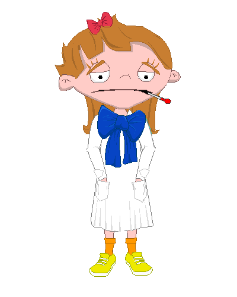
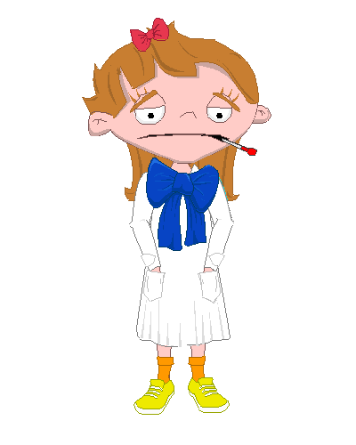
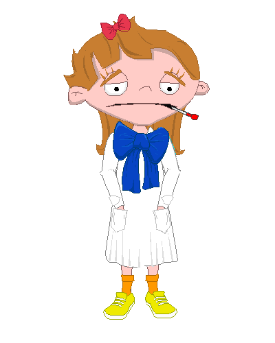
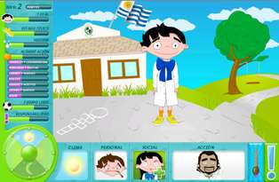

En el siguiente texto explicamos como funciona el juego Salúdame en la XO. La idea general del juego es que tienes que cuidar a un niño o una niña para que esté saludable o mejore si se enferma:

Al abrir el juego verás una serie de pantallas que te cuentan la historia del personaje y te guían para elegir si quieres que sea niña o niño, su apariencia física y su nombre. Después ya puedes empezar a jugar, cuando aparece esta pantalla:

¿Cómo cuidar la salud de mi personaje? Al hacer clic sobre la cabeza del personaje aparece el menú de acciones. Éstas te permitirán mejorar su salud y responder a eventos que lo afecten. También puedes realizar acciones por tu iniciativa: por ejemplo, prueba jugar al fútbol.